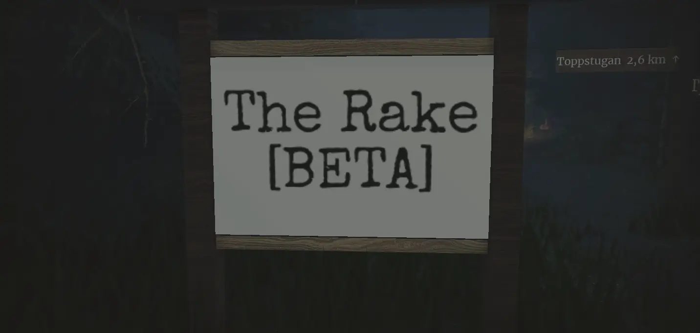
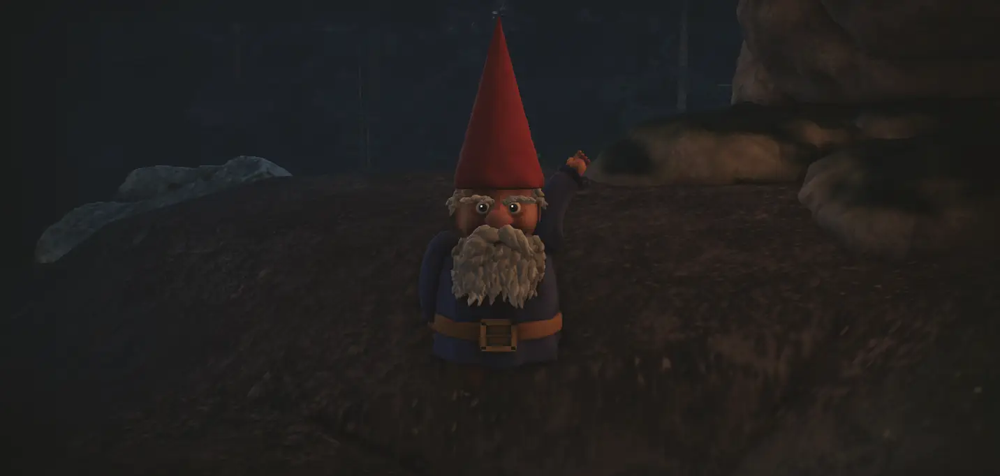
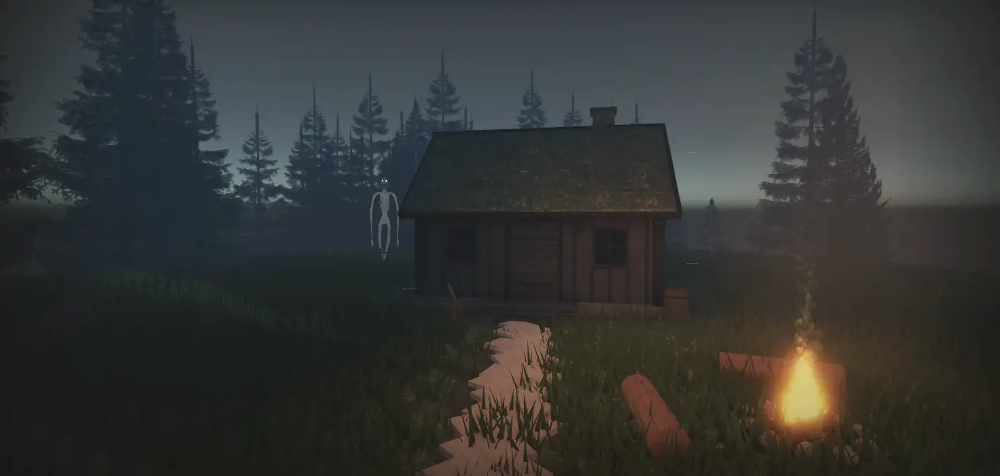
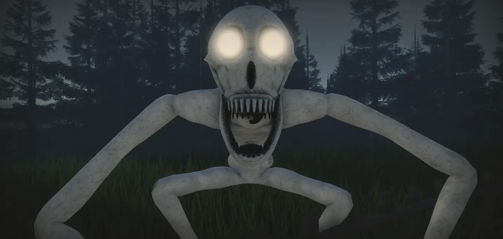
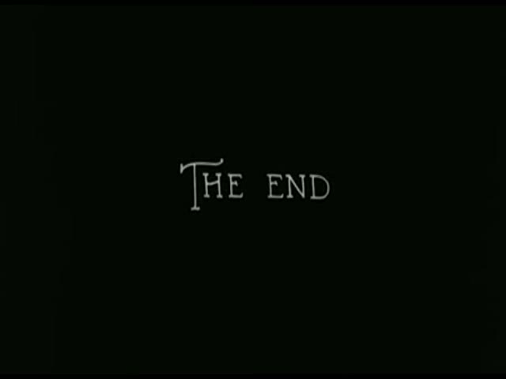

The Rake [BETA]
A Roblox horror game in a Swedish pine forest.
Play on RobloxScroll to follow the trail. Click anywhere for sound.

Gruvan
A rockslide shut the gnome’s mine. Lever the stones loose and he gives you his old spear.

Toppstugan
The cabin at the end of the trail, 2.6 km up. Something is standing in the trees behind it.

The Rake
It follows you up the mountain. Run from it for five seconds with the spear and you get one strike.
